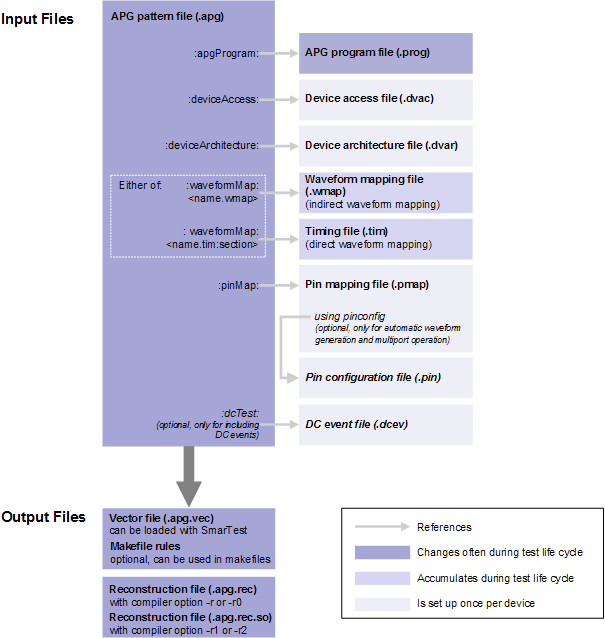

Basic MTL workflow
Using the MTL compiler is straightforward in principle, as outlined below.
About this task
The MTL compiler requires a FLEXlm license provided by a FLEXlm license server.
A FLEXlm license server enables the sharing of floating licenses among all test systems on a network, one use at a time per license. Starting the MTL compiler pulls a license and stopping the compiler releases the license. If the FLEXlm license server cannot provide a license, for example, because it has already been granted to another test system, the MTL compiler will not start.
For further details on FLEXlm licensing see Installing your FLEXlm license in the CTH Installation Guide.
The basic MTL workflow described here gives an overview of the complete process of creating a test pattern. In practice, you will usually skip some of the steps. For example, some of the setup files may already exist so that you can simply re-use them instead of having to create them.
To create a memory test pattern, follow the steps below.
Before you begin
Set up the memory device in SmarTest. In particular, make sure that these files are properly set up:
See the separate SmarTest documentation for details.
Procedure
Results
The compiler creates a vector file (with the .apg.vec file name extension) that can be loaded into the tester with SmarTest.
If you have specified the appropriate options, the compiler uploads and runs the pattern on the tester.
If you have specified that reconstruction files are generated, the compiler creates them.
This graphic shows an overview of the relations between the files involved in the compilation process:

What to do next
If you did not specify automatic uploading and execution, include the vector pattern in a test flow in SmarTest and execute that test flow to test the device under test with your compiled pattern. See the SmarTest documentation for details.
Functional changes
- Introduced before SmarTest 6.3.2